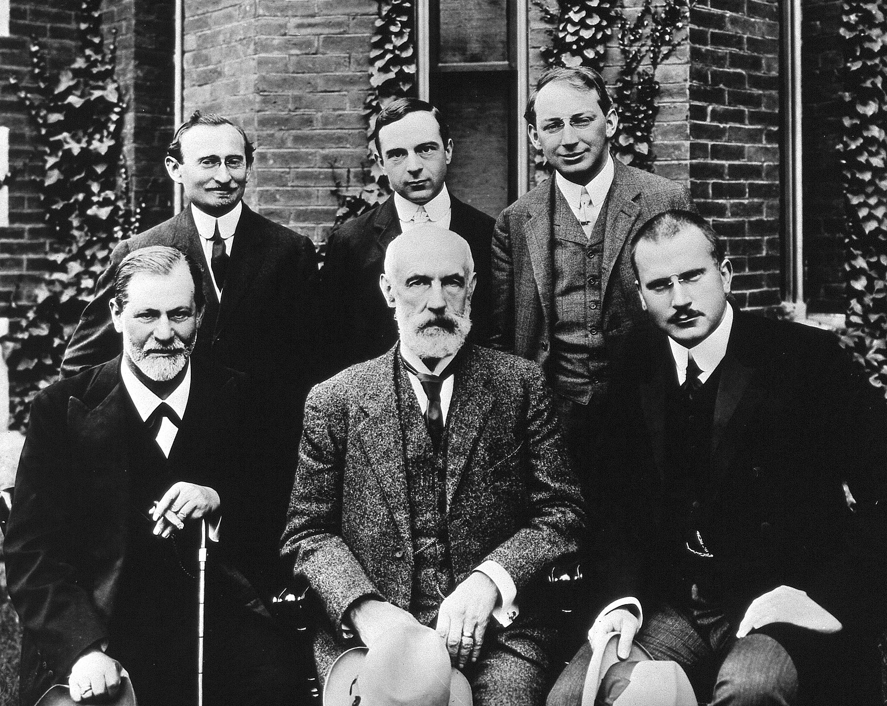

His Life
Sigmund Freud was born on May 6th, 1856, in Freiberg, Moravia, Austrian Empire. He was born to Galician Jewish parents. He became a qualified doctor of medicine in 1881 at the University of Vienna. He became an affiliated professor in 1902. Freud lived in Vienna, until the german anexation of Austria in 1902. Freud wrote the Interpretation of Dreams following the death of his father. For Freud the father was a human symbol of omnipitance, so naturally he was crushed by his fathers death. Freud went on to begin writing the Interpretation of Dreams as a result of his fathers death. In a few short month he finished the book, completed in 1897. However it was only published in 1900.
After the death of his father, and almost accidently killing a patient, Freud quit using cocaine. This is the establishment of modern Freudian theory's, which may not have come to be if it werent for the loss of Freuds father.

Freud was a devout atheist, dispite his parents being devout jews. Freuds athiesm can be seen through much of his works.
While he was young tutored philosphy students, and was best known for his theories of perception and intospection. These would be later developed within his books.
He developed many of his theorys from the teachings of Charles Darwin. Freud also drew from Theodor Lipps, for his theorys of unconciousness.
He began developing his theorys of psychoanalysis while studying with Jean-Martin Charcot. Freud used hypnosis within his clinical work, which he adopted from Josef Breuer. He abandoned hypnosis because of a lack of supporting evidence.
This then led freud to his theory of Psychoanalysis. This theory was the foundation of his works, and were developed and modified as Freud aged.
A Timeline of Freuds Life
| Year | Event |
|---|---|
| 1856 | Freud is born, he is given the Jewish name Schlomo. |
| 1870 | Freud is given Ludwig Borne's complete works, which were a great influence on him. |
| 1870 | Freud is given Ludwig Borne's complete works, which were a great influence on him. |
| 1877 | Publishes anatomical reseach on the central nervous system of specific larva. |
| 1881 | Awarded a Doctor's degree in medicine |
| 1899 | The Interpretation of Dreams first copies |
| 1901 | Freud analysis of Dora. |
| 1906 | Freud begins working with C.G. Jung. |
| 1913 | Breaks off with Jung over disputes with sexual theory. |
| 1925 | Freuds Collected Works appear. |
| 1933 | Freud corresponds with Einstein on the question "Why War?". |
| 1939 | Freud Dies |
Sigmund Freud Factoid
Freud lived within two miles of Adolf Hitler, Joesph Stalin,
Joseph Tito, and Leon Trostky.
Born: 1856
Died: 1939
Known For: Founder of Psychoanalysis
